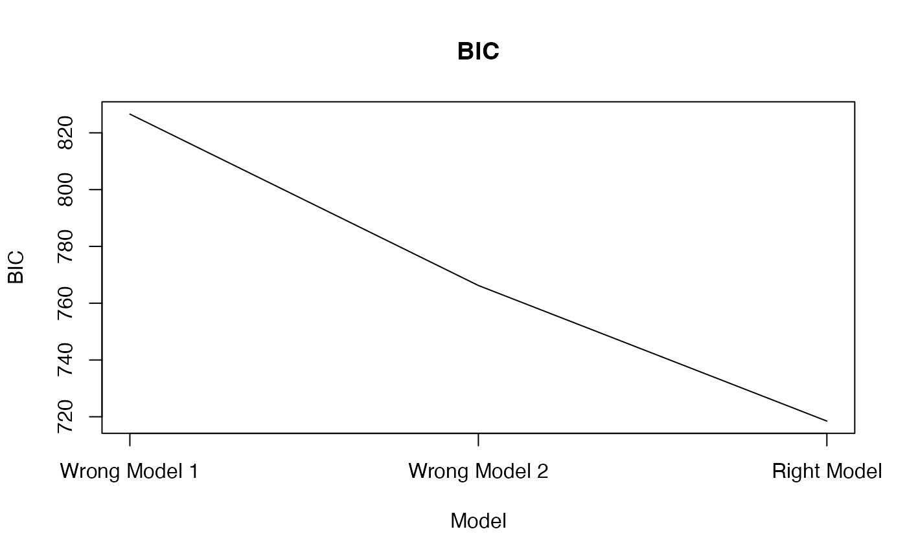

Calculate the AIC and BIC.
array_bic_aic.RdCalculate the AIC and BIC for Kronecker structured covariance models, assuming the array normal distribution.
array_bic_aic(sig_squared, p, mode_ident = NULL, mode_diag = NULL, mode_unstructured = NULL)
Arguments
| sig_squared | A numeric. The MLE of sigma^2 in the array normal model (the 'variance' form of the total variation parameter). |
|---|---|
| p | A vector of integers. The dimension of the data array (including replication modes). |
| mode_ident | A vector of integers. The modes assumed to have identity covariances. |
| mode_diag | A vector of integers. The modes assumed to have diagional covariances. |
| mode_unstructured | A vector of integers. The modes of assumed to have unstructured covariances. |
Value
AIC A numeric. The AIC of the model.
BIC A numeric. The BIC of the model.
Details
The AIC and BIC depend only on the data through the MLE of the total variation parameter. Given this, the dimension of the array, and a specification of which modes are the identity and which are unstructured, this function will calculate the AIC and BIC.
See also
holq for obtaining sig_squared.
Examples
# Generate random array data with first mode having unstructured covariance # second having diagonal covariance structure and third mode having identity # covariance structure. set.seed(857) p <- c(4, 4, 4) Z <- array(stats::rnorm(prod(p)), dim = p) Y <- atrans(Z, list(tensr:::rwish(diag(p[1])), diag(1:p[2]), diag(p[3]))) # Use holq() to fit various models. false_fit1 <- holq(Y, mode_rep = 1:3) ## identity for all modes#> Scale Diff = 0 #> Scale = 154.2977 #>#> Scale Diff = 0.9474794 #> Scale = 79.22942 #> #> Scale Diff = 0 #> Scale = 79.22942 #>#> Scale Diff = 1.399258 #> Scale = 64.31057 #> #> Scale Diff = 0.03221078 #> Scale = 62.30372 #> #> Scale Diff = 0.002281847 #> Scale = 62.16187 #> #> Scale Diff = 0.0003964936 #> Scale = 62.13723 #> #> Scale Diff = 8.992577e-05 #> Scale = 62.13165 #> #> Scale Diff = 2.163337e-05 #> Scale = 62.1303 #> #> Scale Diff = 5.288946e-06 #> Scale = 62.12997 #> #> Scale Diff = 1.299368e-06 #> Scale = 62.12989 #> #> Scale Diff = 3.196904e-07 #> Scale = 62.12987 #> #> Scale Diff = 7.868683e-08 #> Scale = 62.12987 #> #> Scale Diff = 1.936925e-08 #> Scale = 62.12987 #> #> Scale Diff = 4.767876e-09 #> Scale = 62.12987 #> #> Scale Diff = 1.173631e-09 #> Scale = 62.12987 #> #> Scale Diff = 2.888905e-10 #> Scale = 62.12987 #># Get AIC and BIC values. false_aic1 <- array_bic_aic(false_fit1$sig ^ 2, p, mode_ident = 1:length(p)) false_aic2 <- array_bic_aic(false_fit2$sig ^ 2, p, mode_ident = 2:length(p), mode_unstructured = 1) true_aic <- array_bic_aic(true_fit$sig ^ 2, p, mode_ident = 2:length(p), mode_diag = 1) # Plot the results. plot(c(false_aic1$AIC, false_aic2$AIC, true_aic$AIC), type = "l", xaxt = "n", xlab = "Model", ylab = "AIC", main = "AIC")axis(side = 1, at = 1:3, labels = c("Wrong Model 1", "Wrong Model 2", "Right Model"))plot(c(false_aic1$BIC, false_aic2$BIC, true_aic$BIC), type = "l", xaxt = "n", xlab = "Model", ylab = "BIC", main = "BIC")axis(side = 1, at = 1:3, labels = c("Wrong Model 1", "Wrong Model 2", "Right Model"))